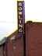
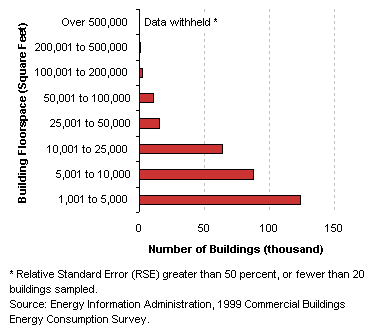
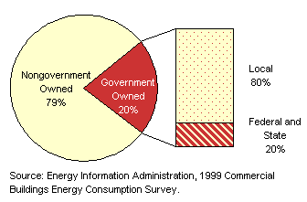
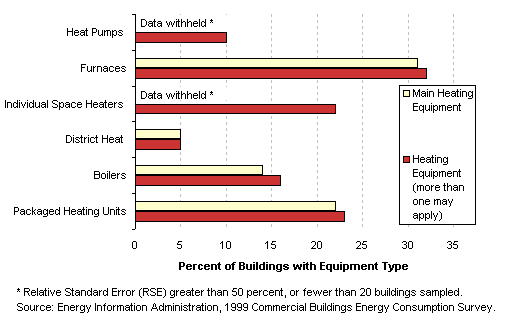
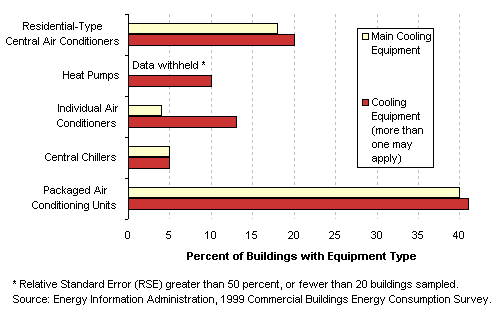
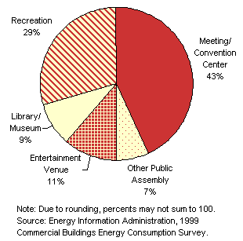
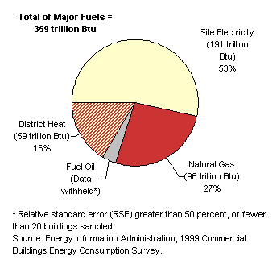

|

|
|
Characteristics
by Activity...
Public Assembly
|
Public
assembly buildings are those in which people gather for social or recreational
activities, whether in private or non-private meeting halls.
Basic Characteristics
[ See also: Equipment | Activity
Subcategories | Energy Use
]
|
Public Assembly
Buildings...
- Most public assembly buildings were not large
convention centers or entertainment arenas; about two-fifths fell
into the smallest size category.
- About one-fifth of public assembly buildings
were government-owned, mostly by local governments; examples of
these types of public assembly buildings are libraries and community
recreational facilities.
Tables:
|
|
Number
of Public Assembly Buildings by Building Size Category

Ownership of
Public Assembly Buildings

|
Equipment
Table: Buildings,
Size, and Age Data by Equipment Types
Predominant
Heating Equipment Types in Public Assembly Buildings

Predominant
Cooling Equipment Types in Public Assembly Buildings

Top
Activity
Subcategories
Building
respondents who reported that their building was a public assembly
building were then asked to place the building into the following
more specific categories:
- a theater,
cinema, sports arena, casino, or nightclub
- a gymnasium,
health club, bowling alley, or other recreational sports facility
- a social
meeting center, meeting hall, or convention center
- a library
or museum
- a transportation
terminal
- a funeral
home
- a broadcasting
studio
- some other
type of public assembly
|
|
Public
Assembly Buildings by Subcategory |
There were enough buildings
in the responding sample to report statistics for theaters/cinemas/sports
arenas/casinos/nightclubs (shortened to "entertainment venue"),
gymnasiums/health clubs/bowling alleys/other recreational sports facilities
(shortened to "recreation"), social meeting centers/meeting centers/convention
centers (shortened to "meeting/convention center"), and libraries/museums.
The rest of these activities have been combined into the other public assembly
category.
The meeting/convention
center category in which the majority of the public assembly buildings
belong covers a wide variety of building types—it includes anything
from a community meeting center to a large convention center.
Table: Selected
Data by Type of Public Assembly Building
Top
Energy
Use
Public
assembly buildings used 359 trillion Btu of total energy, which was
6 percent of total energy consumption for all commercial buildings.
Since they comprised 7 percent of commercial floorspace, this
means that their energy intensity was just slightly below the commercial
average.
|
|
Public assembly buildings were one of the few building types to
use a significant amount of district heat.
Tables:
Reference:
What is a Btu?
|
|
Energy Consumption in Public Assembly Buildings by Energy Source

|
The
total energy consumption data in the figures and tables above are “site
energy,” which includes only the amount of electricity consumed
within the building; energy use can also be expressed as “primary
energy,” which includes the energy consumed during the generation
and transmission of electricity. Public
assembly buildings used 577 trillion Btu of primary electricity, so their
total primary energy consumption was 745 trillion Btu, or 6 percent of
total primary consumption for all commercial buildings.
Top
Specific questions may be directed to:
Joelle Michaels
joelle.michaels@eia.doe.gov
CBECS Manager
Release date: July 24, 2002
Page last modified:
May 4, 2009 2:52 PM
http://www.eia.gov/consumption/commercial/data/archive/cbecs/pba99/publicassembly/publicassembly.html
If you are having any technical problems with this
site, please contact the EIA webmaster at wmaster@eia.doe.gov.
|